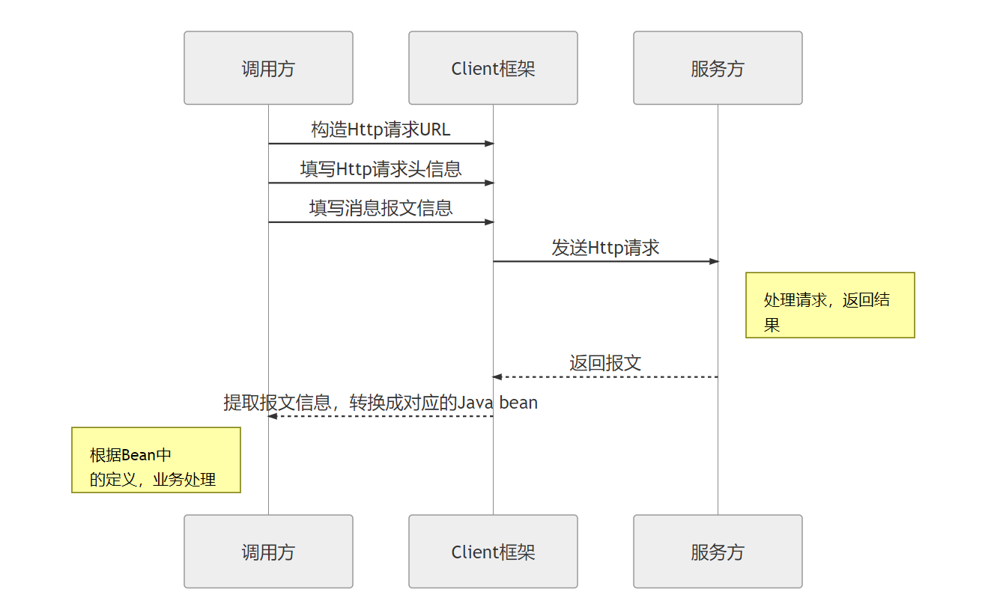
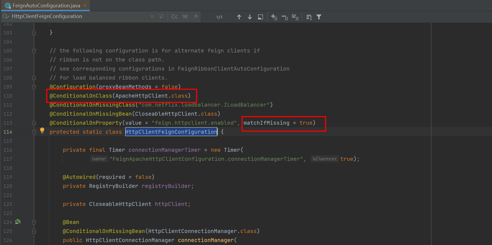

服务调用的组件OpenFeign介绍
服务调用历史
实现服务进程之间的调用方法有很多，在Feign之前常用如下：
- HttpClient提供高效的、最新的、功能丰富的支持 HTTP 协议的客户端编程工具包。
- RestTemplate设计是为了Spring更好的请求并解析Restful风格的接口返回值而设计的，对HttpClient进行了封装以提高其易用性。

请求示例：
提供者接口：
@Slf4j
@RestController
@RequestMapping("/openfeign/provider")
public class OpenFeignProviderController {
@PostMapping("/test/{id}")
public Order test(@PathVariable("id")Long id, @RequestParam("name") String name, @RequestParam("num") String num){
return Order.builder()
.id(id)
.name(name)
.num(num)
.build();
}
}HttpClient请求：
@Slf4j
@RestController
@RequestMapping("/http/provider")
public class HttpPostController {
@PostMapping("/test/{id}")
public Order test(@PathVariable("id")Integer id) throws IOException {
//发送远程的http请求的地址
String url = "http://localhost:9055/openfeign/provider/test/" + id;
//创建HttpClient对象
CloseableHttpClient client = HttpClients.createDefault();
//创建HttpPost对象, 发送post请求
HttpPost method = new HttpPost(url);
//封装发送到服务提供者的参数
NameValuePair name = new BasicNameValuePair("name", "蜂蜜");
NameValuePair num = new BasicNameValuePair("num", "20");
List<NameValuePair> params = new ArrayList<>();
params.add(name);
params.add(num);
//封装请求体数据
method.setEntity(new UrlEncodedFormEntity(params, "UTF-8"));
//发送具体的http请求
HttpResponse response = client.execute(method);
//获得服务提供者响应的具体数据
HttpEntity entity = response.getEntity();
//获得http的响应体
InputStream is = entity.getContent();
int len = 0;
char[] buf = new char[1024];
//使用字符流读
InputStreamReader reader = new InputStreamReader(is);
StringBuffer sb = new StringBuffer();
while((len = reader.read(buf)) != -1){
sb.append(String.valueOf(buf, 0, len));
}
//转成对象
ObjectMapper mapper = new ObjectMapper();
Order order = mapper.readValue(sb.toString(), Order.class);
System.out.println(order);
return order;
}
}RestTemplate请求：
@Slf4j
@RestController
@RequestMapping("/rest_template/consumer")
public class RestTemplateController {
@Resource
private RestTemplate restTemplate;
@PostMapping("/test/{id}")
public Order test(@PathVariable("id")Integer id) throws IOException {
//发送远程http请求的url
String url = "http://localhost:9055/openfeign/provider/test/" + id;
//发送到远程服务的参数
MultiValueMap<String, Object> params = new LinkedMultiValueMap<>();
params.add("name", "蜂蜜");
params.add("num", "20");
//通过RestTemplate对象发送post请求
Order order = restTemplate.postForObject(url, params, Order.class);
return order;
}
}
RestTemplate的底层实现仍然是HttpClient或HttpUrlConnection或OkHttp（三者可选），只是对它进行了封装，从而降低编码复杂度。
但是不论是HttpClient还是RestTemplate也存在一定的缺点：
- 请求的URL分散，不好维护
- 所有的数据调用和转换(响应信息需要重新反序列化)都是由用户来完成的，我们可不想直接访问REST接口
所以有没有更好的方案，让我们可以像调用service那样来直接调用其他服务，直接把响应结果封装到一个对象里边呢？下面就引出了我们今天的主题Feign。
openFeign是什么
实际上在OpenFeign出现之前，有一个阶段，开发者经常使用的是Netflix Feign。二者在使用方式、版本集成方面还是有一些差异性。本篇只做一个简单的说明。
Feign旨在使得Java Http客户端变得更容易。Feign集成了Ribbon、RestTemplate实现了负载均衡的执行Http调用，只不过对原有的方式（Ribbon+RestTemplate）进行了封装，开发者不必手动使用RestTemplate调服务，而是定义一个接口，在这个接口中标注一个注解即可完成服务调用，这样更加符合面向接口编程的宗旨，简化了开发。
Maven坐标差异
<dependency>
<groupId>com.netflix.feign</groupId>
<artifactId>feign-core</artifactId>
</dependency>
<dependency>
<groupId>io.github.openfeign</groupId>
<artifactId>feign-core</artifactId>
</dependency>Netflix Feign还是Open Feign
<dependency>
<groupId>org.springframework.cloud</groupId>
<artifactId>spring-cloud-starter-feign</artifactId>
</dependency>
<dependency>
<groupId>org.springframework.cloud</groupId>
<artifactId>spring-cloud-starter-openfeign</artifactId>
</dependency>简单来说：
spring-cloud-starter-openfeign是为Spring Cloud2.x准备的，只不过维持了一段时间的对1.x的兼容。- 而
spring-cloud-starter-feign是专为Spring Cloud1.x服务。
下图中注释掉的部分是Feign的注解书写方式，没有注释掉的注解是Spring MVC的注解方式。


官方地址：https://docs.spring.io/spring-cloud-openfeign/docs/2.2.10.BUILD-SNAPSHOT/reference/html
官方地址：https://github.com/OpenFeign/feign
我们为什么要使用Feign Feign 解决了什么问题？
Feign 封装 HTTP 调用流程，面向接口编程。
Feign 本身很简单，但做了大量的适配工作，这也是这个框架存在的意义
openFeign调用演示
添加maven依赖
<dependency>
<groupId>org.springframework.cloud</groupId>
<artifactId>spring-cloud-starter-openfeign</artifactId>
</dependency>添加注解@EnableFeignClients开启openFeign功能
@SpringBootApplication
@EnableDiscoveryClient
@EnableFeignClients(defaultConfiguration = FeignClientConfig.class, basePackages = "com.rrc.authority.core.feign")
public class OpenFeignConsumer9006Application
{
public static void main(String[] args) {
SpringApplication.run(OpenFeignConsumer9006Application.class, args);
}
}新建一个openFeign接口，使用@FeignClient注解标注，如下
@FeignClient(value = "openFeign-provider")
public interface OpenFeignService {
@GetMapping("/openfeign/provider/test/{id}")
String get(@PathVariable("id")Integer id);
}人人车FeignClient接口
@Component
@FeignClient(name = "auth-service", url = "${auth-service.url}" )
public interface AuthServiceFeignClient {
/**
* 查询审批待办列表
* @param userId
* @return
*/
@RequestLine("GET /users/{user_id}?filter=user_id;name;username")
@Headers("Content-Type: application/json")
AuthUserDto queryAuthUserById(@Param("user_id") Integer userId);
}OpenFeign的核心设计原理

基于面向接口的动态代理方式生成实现类
根据Contract协议规则，解析接口类的注解信息，解析成内部表现
基于 RequestBean，动态生成Request
使用Encoder 将Bean转换成 Http报文正文（消息解析和转码逻辑）
拦截器负责对请求和返回进行装饰处理
日志记录
发送HTTP请求
Feign的大体机制
通过在启动类上标记 @EnableFeignClients 注解来开启feign的功能，服务启动后会扫描 @FeignClient 注解标记的接口，然后根据扫描的注解信息为每个接口类生成feign客户端请求，同时解析接口方法中的Spring MVC的相关注解，通过专门的注解解析器识别这些注解信息，以便后面可以正确的组装请求参数，使用 Ribbon 和 Eureka 获取到请求服务的真实地址等信息，最后使用 http 相关组件进行执行调用。其大致流程图如下：

代码入口@EnableFeignClients注解
在EnableFeignClients 注解类中有一个 @Import(FeignClientsRegistrar.class)的配置
@Retention(RetentionPolicy.RUNTIME)
@Target(ElementType.TYPE)
@Documented
@Import(FeignClientsRegistrar.class)
public @interface EnableFeignClients {
String[] value() default {};
String[] basePackages() default {};
Class<?>[] basePackageClasses() default {};
Class<?>[] defaultConfiguration() default {};
Class<?>[] clients() default {};
}日常代码写法：
@EnableFeignClients(defaultConfiguration = FeignClientConfig.class, basePackages = "com.rrc.authority.core.feign")核心类FeignClientsRegistrar
追踪代码进入到FeignClientsRegistrar类中，会发现FeignClientsRegistrar 类实现了ImportBeanDefinitionRegistrar接口，因此项目启动时会调用registerBeanDefinitions方法，该方法中会扫描 EnableFeignClients 和 FeignClient 注解信息并设置相关信息。
/**
* spring boot 启动时会自动调用 ImportBeanDefinitionRegistrar 入口方法
*/
@Override
public void registerBeanDefinitions(AnnotationMetadata metadata,
BeanDefinitionRegistry registry) {
// 读取 @EnableFeignClients 注解中信息 5个属性的值 注册了一个FeignClientSpecification类
registerDefaultConfiguration(metadata, registry);
// 扫描所有@FeignClient注解的类 解析属性，最后注册到IoC容器中
registerFeignClients(metadata, registry);
}registerDefaultConfiguration方法
在registerDefaultConfiguration()方法中会读取@EnableFeignClients注解信息，然后将这些信息注册到一个 BeanDefinitionRegistry 里面去；之后feign的一些默认配置将通过这里注册的信息中取获取。
registerFeignClients方法
- registerFeignClients()方法会扫描相关包路径（如果EnableFeignClients的basePackages没有配置，默认会直接使用启动类所在的包路径）下所有的@FeiginClient注解的类
- 然后根据@FeiginClient注解信息向BeanDefinitionRegistry里面注册bean，注意这里设置的bean名称生成规则是使用服务名+FeignClientSpecification.class.getSimpleName()，因此如果对一个服务写多个接口类会发生bean名称重复导致注册失败。所以需要增加一个 allow-bean-definition-overriding: true 的配置。
- 最后会调用 registerFeignClient() 方法注册feign客户端，这里的bean名称的为当前接口类的类路径。

registerFeignClient()方法中在构建bean的时候，实际构建的是FeignClientFactoryBean。
FeignClientFactoryBean
注入到容器的是一个FactoryBean， 则真正生成Bean 是FactoryBean的getObject 方法，而且是FactoryBean的创建是在IoC容器过程中创建的。SpringIoC创建完对象会先反射创建对象，然后属性注入，属性注入过程中会根据BeanDefinition对象的propertyValues 给反射的对象进行属性注入。
FactoryBean.getObject方法生成对象会在第一次使用bean时创建, 而不是在容器启动过程中就创建(也就是如果只声明不使用FactoryBean生成的对象不会进行创建)。
我们需要的target对象是一个接口，所以是需要用到JDK的动态代理来生成代理对象然后服务于业务。
class FeignClientFactoryBean
implements FactoryBean<Object>, InitializingBean, ApplicationContextAware {
@Override
public Object getObject() throws Exception {
return getTarget();
}
/**
* @param <T> the target type of the Feign client
* @return a {@link Feign} client created with the specified data and the context
* information
*/
<T> T getTarget() {
FeignContext context = this.applicationContext.getBean(FeignContext.class);
Feign.Builder builder = feign(context);
if (!StringUtils.hasText(this.url)) {
if (!this.name.startsWith("http")) {
this.url = "http://" + this.name;
}
else {
this.url = this.name;
}
this.url += cleanPath();
return (T) loadBalance(builder, context,
new HardCodedTarget<>(this.type, this.name, this.url));
}
if (StringUtils.hasText(this.url) && !this.url.startsWith("http")) {
this.url = "http://" + this.url;
}
String url = this.url + cleanPath();
Client client = getOptional(context, Client.class);
if (client != null) {
if (client instanceof LoadBalancerFeignClient) {
// not load balancing because we have a url,
// but ribbon is on the classpath, so unwrap
client = ((LoadBalancerFeignClient) client).getDelegate();
}
if (client instanceof FeignBlockingLoadBalancerClient) {
// not load balancing because we have a url,
// but Spring Cloud LoadBalancer is on the classpath, so unwrap
client = ((FeignBlockingLoadBalancerClient) client).getDelegate();
}
builder.client(client);
}
Targeter targeter = get(context, Targeter.class);
return (T) targeter.target(this, builder, context,
new HardCodedTarget<>(this.type, this.name, url));
}ReflectiveFeign
public <T> T newInstance(Target<T> target) {
//根据接口类和Contract协议解析方式，解析接口类上的方法和注解，转换成内部的MethodHandler处理方式
Map<String, MethodHandler> nameToHandler = targetToHandlersByName.apply(target);
Map<Method, MethodHandler> methodToHandler = new LinkedHashMap<Method, MethodHandler>();
List<DefaultMethodHandler> defaultMethodHandlers = new LinkedList<DefaultMethodHandler>();
for (Method method : target.type().getMethods()) {
if (method.getDeclaringClass() == Object.class) {
continue;
} else if (Util.isDefault(method)) {
DefaultMethodHandler handler = new DefaultMethodHandler(method);
defaultMethodHandlers.add(handler);
methodToHandler.put(method, handler);
} else {
methodToHandler.put(method, nameToHandler.get(Feign.configKey(target.type(), method)));
}
}
// 基于Proxy.newProxyInstance 为接口类创建动态实现，将所有的请求转换给InvocationHandler 处理。
InvocationHandler handler = factory.create(target, methodToHandler);
T proxy = (T) Proxy.newProxyInstance(target.type().getClassLoader(),
new Class<?>[] {target.type()}, handler);
for (DefaultMethodHandler defaultMethodHandler : defaultMethodHandlers) {
defaultMethodHandler.bindTo(proxy);
}
return proxy;
}
对应的FeignClient源码为：
@FeignClient(value = "openFeign-provider", configuration = OpenFeignConfig.class)
public interface OpenFeignService {
@GetMapping("/openfeign/provider/test/{id}")
String get(@PathVariable("id")Integer id);
/**
* 参数默认是@RequestBody标注的，如果通过POJO表单传参的，使用@SpringQueryMap标注
*/
@PostMapping("/openfeign/provider/order1")
Order createOrder1(@SpringQueryMap Order order);
/**
* 参数默认是@RequestBody标注的，这里的@RequestBody可以不填
* 方法名称任意
*/
@PostMapping("/openfeign/provider/order2")
Order createOrder2(@RequestBody Order order);
/**
* 必须要@RequestParam注解标注，且value属性必须填上参数名
* 方法参数名可以任意，但是@RequestParam注解中的value属性必须和provider中的参数名相同
*/
@PostMapping("/openfeign/provider/test2")
String test(@RequestParam("id") String arg1, @RequestParam("name") String arg2);
@PostMapping("/openfeign/provider/order3")
String batchOrder(List<Order> orders);
@PostMapping("/openfeign/provider/header")
String header();
}SynchronousMethodHandler（同步方法调用处理器）
final class SynchronousMethodHandler implements MethodHandler {
private static final long MAX_RESPONSE_BUFFER_SIZE = 8192L;
// 方法元信息
private final MethodMetadata metadata;
// 目标 也就是最终真正构建Http请求Request的实例 一般为HardCodedTarget
private final Target<?> target;
// 负责最终请求的发送 -> 默认传进来的是基于JDK源生的，效率很低，不建议直接使用
private final Client client;
// 负责重试 -->默认传进来的是Default，是有重试机制的哦，生产上使用请务必注意
private final Retryer retryer;
// 请求拦截器，它会在target.apply(template); 也就是模版 -> 请求的转换之前完成拦截
// 说明：并不是发送请求之前那一刻哦，请务必注意啦
// 它的作用只能是对请求模版做定制，而不能再对Request做定制了
// 内置仅有一个实现：BasicAuthRequestInterceptor 用于鉴权
private final List<RequestInterceptor> requestInterceptors;
private final Logger logger;
// 若你想在控制台看到feign的请求日志，改变此日志级别为info吧（因为一般只有info才会输出到日志文件）
private final Level logLevel;
private final feign.RequestTemplate.Factory buildTemplateFromArgs;
// 请求参数：比如链接超时时间、请求超时时间等
private final Options options;
private final Decoder decoder;
// 发生错误/异常时的解码器
private final ErrorDecoder errorDecoder;
// 是否解码404状态码？默认是不解码的
private final boolean decode404;
public Object invoke(Object[] argv) throws Throwable {
// 根据方法入参，结合工厂构建出一个请求模版
RequestTemplate template = this.buildTemplateFromArgs.create(argv);
Retryer retryer = this.retryer.clone();
while(true) {
try {
return this.executeAndDecode(template);
} catch (RetryableException var5) {
// 该逻辑是：判断是否需要重试如果不重试了，该异常会继续抛出
retryer.continueOrPropagate(var5);
if (this.logLevel != Level.NONE) {
this.logger.logRetry(this.metadata.configKey(), this.logLevel);
}
}
}
}Feign在默认情况下使用的是JDK原生的URLConnection发送HTTP请求，没有连接池，但是对每个地址会保持一个长连接，即利用HTTP的persistence connection。
在生产环境中，通常不使用默认的http client，通常有如下两种选择：
- 使用ApacheHttpClient
- 使用OkHttp
在openFeign接口服务的pom文件添加如下依赖：
<!--使用Apache HttpClient替换Feign原生httpclient-->
<dependency>
<groupId>org.apache.httpcomponents</groupId>
<artifactId>httpclient</artifactId>
</dependency>
<dependency>
<groupId>io.github.openfeign</groupId>
<artifactId>feign-httpclient</artifactId>
</dependency>
@ConditionalOnClass(ApacheHttpClient.class)，必须要有ApacheHttpClient这个类才会生效，并且feign.httpclient.enabled这个配置要设置为true。

RequestInterceptor
令牌在openFeign调用过程中是不能自动中继的，因此必须手动的将令牌信息传递下去。
@Component
public class FeignRequestInterceptor implements RequestInterceptor {
@Override
public void apply(RequestTemplate template) {
//从RequestContextHolder中获取HttpServletRequest
HttpServletRequest httpServletRequest = RequestContextUtils.getRequest();
//获取RequestContextHolder中的信息
Map<String, String> headers = getHeaders(httpServletRequest);
//放入feign的RequestTemplate中
for (Map.Entry<String, String> entry : headers.entrySet()) {
template.header(entry.getKey(), entry.getValue());
}
}
/**
* 获取原请求头
*/
private Map<String, String> getHeaders(HttpServletRequest request) {
Map<String, String> map = new LinkedHashMap<>();
Enumeration<String> enumeration = request.getHeaderNames();
if (enumeration != null) {
while (enumeration.hasMoreElements()) {
String key = enumeration.nextElement();
String value = request.getHeader(key);
map.put(key, value);
}
}
return map;
}
}
引用